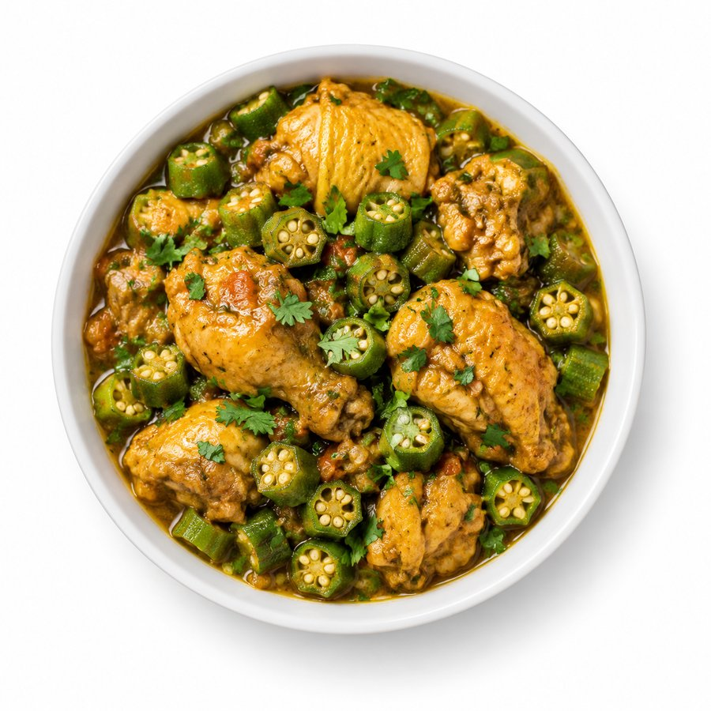
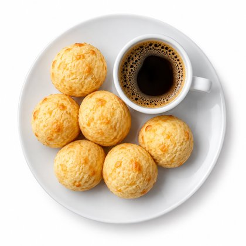
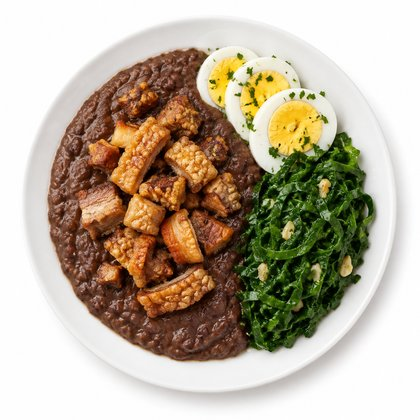
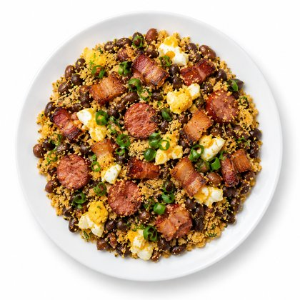
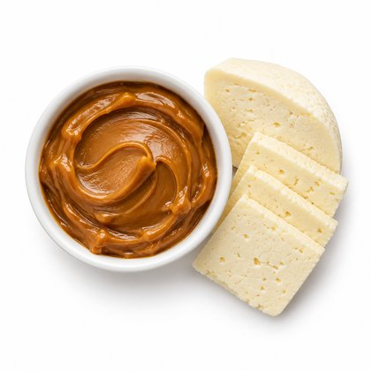

─ Comida Mineira de Verdade, Feita com o Carinho de Casa! ؛ ଓ
Do tutu com torresmo ao pão de queijo saindo do forno, cada prato do nosso cardápio carrega o tempero das receitas de família de Minas Gerais. Peça agora e sinta o sabor de casa onde você estiver. ꕤ ｡ ˚⋆